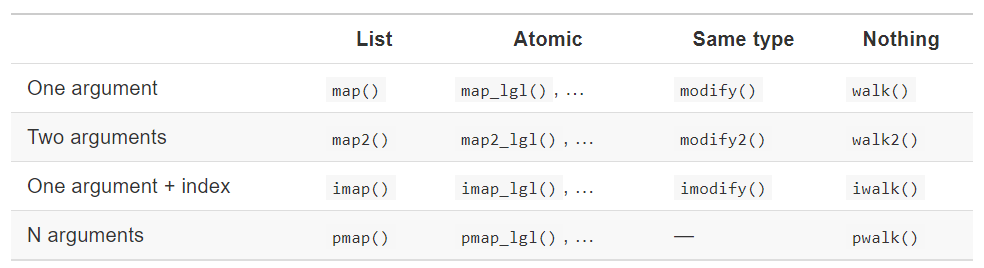
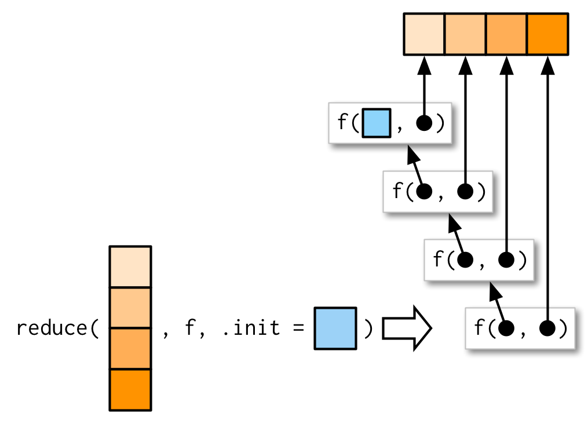
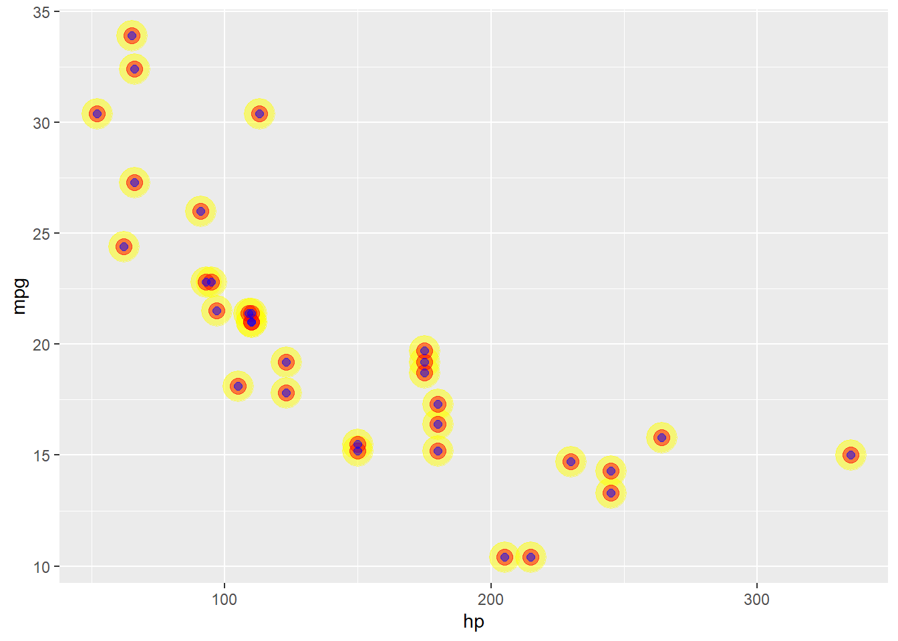

purrr::map() family of functionals.purrr::walk() family of functionals.purrr::reduce() and purrr::accumulate() family of functionals.purrr::safely() and purrr::possibly() to deal with failure.9.1. Introduction
9.2. map()
9.3. purrr style
9.4. map_ variants
9.5. reduce() and accumulate family of functions
Functionals are functions that take function as input and return a vector as output. Functionals that you probably have used before are: apply(), lapply() or tapply().
alternatives to loops
a functional is better than a for loop is better than while is better than repeat
encourages function logic to be separated from iteration logic
can collapse into vectors/data frames easily
map() has two arguments, a vector and a function. It performs the function on each element of the vector and returns a list. We can also pass in some additional argument into the function.
purrr::map() is equivalent to lapply()
returns a list and is the most general
the length of the input == the length of the output
map() is more flexible, with additional arguments allowed
map() has a host of extensions
map_chr()map_dbl()map_int()map_lgl()Anonymous functions
#> mpg cyl disp hp drat wt
#> 20.090625 6.187500 230.721875 146.687500 3.596563 3.217250~ to set a formula.x to reference the input map(.x = ..., .f = )#> mpg cyl disp hp drat wt qsec
#> 20.090625 6.187500 230.721875 146.687500 3.596563 3.217250 17.848750
#> vs am gear carb
#> 0.437500 0.406250 3.687500 2.812500Note that .x is the name of the first argument in map() (.f is the name of the second argument).
#> mpg cyl disp hp drat wt qsec vs am gear carb
#> 25 3 27 22 22 29 30 2 2 3 6#> mpg cyl disp hp drat wt qsec vs am gear carb
#> 25 3 27 22 22 29 30 2 2 3 6#> mpg cyl disp hp drat wt qsec vs am gear carb
#> 25 3 27 22 22 29 30 2 2 3 6#> mpg cyl disp hp drat wt qsec vs am gear carb
#> 25 3 27 22 22 29 30 2 2 3 6#> mpg cyl disp hp drat wt qsec vs am gear carb
#> 25 3 27 22 22 29 30 2 2 3 6#> mpg cyl disp hp drat wt qsec vs am gear carb
#> 32 32 32 32 32 32 32 32 32 32 32#> mpg cyl disp hp drat wt qsec vs am gear carb
#> 21.00 6.00 160.00 110.00 3.90 2.62 16.46 0.00 1.00 4.00 4.00#> mpg cyl disp hp drat wt qsec vs am gear carb
#> 21.00 6.00 160.00 110.00 3.90 2.62 16.46 0.00 1.00 4.00 4.00Sometimes we might want the output to be the same as the input, then in that case we can use the modify function rather than map
#> $x
#> [1] 3 6 9
#>
#> $y
#> [1] 18 15 12#> x y
#> 1 3 18
#> 2 6 15
#> 3 9 12Note that modify() always returns the same type of output (which is not necessarily true with map()). Additionally, modify() does not actually change the value of df.
purrr style#> mpg cyl disp hp drat wt
#> 20.13000 6.20000 233.93000 136.20000 3.54500 3.39845An example from tidytuesday
tt <- tidytuesdayR::tt_load("2020-06-30")
# filter data & exclude columns with lost of nulls
list_df <-
map(
.x = tt[1:3],
.f =
~ .x |>
filter(issue <= 152 | issue > 200) |>
mutate(timeframe = ifelse(issue <= 152, "first 5 years", "last 5 years")) |>
select_if(~mean(is.na(.x)) < 0.2)
)
# write to global environment
iwalk(
.x = list_df,
.f = ~ assign(x = .y, value = .x, envir = globalenv())
)map_*() variantsThere are many variants
map2_*().x by 2.x by another value .ywalk()walk() when we want to call a function for it side effect(s) rather than its return value, like generating plots, write.csv(), or ggsave(). If you don’t want a return value, map() will print more info than you may want.walk() insteadcat() does have a result, it’s just usually returned invisibly.
We can use pwalk() to save a list of plot to disk. Note that the “p” in pwalk() means that we have more than 1 (or 2) variables to pipe into the function. Also note that the name of the first argument in all of the “p” functions is now .l (instead of .x).
#> Saving 7 x 5 in image
#> Saving 7 x 5 in image
#> Saving 7 x 5 in image#> Saving 7 x 5 in image
#> Saving 7 x 5 in image
#> Saving 7 x 5 in image#> [[1]]
#> [1] "C:\\Users\\jonth\\AppData\\Local\\Temp\\RtmpSMVSZz/4.png"
#>
#> [[2]]
#> [1] "C:\\Users\\jonth\\AppData\\Local\\Temp\\RtmpSMVSZz/6.png"
#>
#> [[3]]
#> [1] "C:\\Users\\jonth\\AppData\\Local\\Temp\\RtmpSMVSZz/8.png"walk, walk2 and pwalk all invisibly return .x the first argument. This makes them suitable for use in the middle of pipelines.
note: I don’t think that it is “.x” (or “.l”) that they are returning invisibly. But I’m not sure what it is. Hadley says:
purrr provides the walk family of functions that ignore the return values of the
.fand instead return.xinvisibly.
But not in the first cat() example, it is the NULL values that get returned invisibly (those aren’t the same as .x).
imap()imap() is like map2()except that .y is derived from names(.x) if named or seq_along(.x) if not.
These two produce the same result
#> mpg cyl
#> "mpg has a mean of 20.1" "cyl has a mean of 6.2"
#> disp hp
#> "disp has a mean of 230.7" "hp has a mean of 146.7"
#> drat wt
#> "drat has a mean of 3.6" "wt has a mean of 3.2"#> mpg cyl
#> "mpg has a mean of 20.1" "cyl has a mean of 6.2"
#> disp hp
#> "disp has a mean of 230.7" "hp has a mean of 146.7"
#> drat wt
#> "drat has a mean of 3.6" "wt has a mean of 3.2"pmap()you can pass a named list or dataframe as arguments to a function
for example runif() has the parameters n, min and max
#> [[1]]
#> [1] 9.52234
#>
#> [[2]]
#> [1] 49.53679 46.47017
#>
#> [[3]]
#> [1] 488.8100 796.6801 282.7772#> [[1]]
#> [1] 5.246834
#>
#> [[2]]
#> [1] 73.39068 30.57879
#>
#> [[3]]
#> [1] 169.6667 950.1126 820.9357expand_grid() when I want all possible parameter combinations.#> # A tibble: 12 × 3
#> n min max
#> <int> <dbl> <dbl>
#> 1 1 1 10
#> 2 1 1 100
#> 3 1 10 10
#> 4 1 10 100
#> 5 2 1 10
#> 6 2 1 100
#> 7 2 10 10
#> 8 2 10 100
#> 9 3 1 10
#> 10 3 1 100
#> 11 3 10 10
#> 12 3 10 100#> [[1]]
#> [1] 9.474848
#>
#> [[2]]
#> [1] 10.63548
#>
#> [[3]]
#> [1] 10
#>
#> [[4]]
#> [1] 92.44257
#>
#> [[5]]
#> [1] 7.165047 6.201947
#>
#> [[6]]
#> [1] 64.79074 16.54110
#>
#> [[7]]
#> [1] 10 10
#>
#> [[8]]
#> [1] 62.12314 52.31713
#>
#> [[9]]
#> [1] 6.806213 5.541865 8.580469
#>
#> [[10]]
#> [1] 7.10806 51.56879 85.70133
#>
#> [[11]]
#> [1] 10 10 10
#>
#> [[12]]
#> [1] 74.48871 11.65879 58.31278reduce() familyThe reduce() function is a powerful functional that allows you to abstract away from a sequence of functions that are applied in a fixed direction.
reduce() takes a vector as its first argument, a function as its second argument, and an optional .init argument last. It will then apply the function repeatedly to the vector until there is only a single element left.
(Hint: start at the top of the image and read down.)
Let me really quickly demonstrate reduce() in action.
Say you wanted to add up the numbers 1 through 5 using only the plus operator +. You could do something like:
Which is the same as:
And if you want the start value to be something that is not the first argument of the vector, pass that value to the .init argument:

Let us use the reduce() function. Note that reduce2() takes two arguments, but the first value (..1) is given by the .init value.
#> $age
#> # A tibble: 1 × 2
#> name age
#> <chr> <dbl>
#> 1 john 30
#>
#> $sex
#> # A tibble: 2 × 3
#> name sex trt$name $treatment
#> <chr> <chr> <chr> <chr>
#> 1 john M Mary A
#> 2 mary F Mary A#> Joining with `by = join_by(name)`#> # A tibble: 2 × 4
#> name age sex trt$name $treatment
#> <chr> <dbl> <chr> <chr> <chr>
#> 1 john 30 M Mary A
#> 2 mary NA F Mary A#> Joining with `by = join_by(name)`#> # A tibble: 2 × 4
#> name age sex trt$name $treatment
#> <chr> <dbl> <chr> <chr> <chr>
#> 1 john 30 M Mary A
#> 2 mary NA F Mary Amap_df*() variantsmap_dfr() = row bind the results
map_dfc() = column bind the results
Note that map_dfr() has been superseded by map() |> list_rbind() and map_dfc() has been superseded by map() |> list_cbind()
#> [[1]]
#> mpg cyl disp hp drat wt qsec vs am gear carb n
#> 1 20 5 208 122 3 3 18 0 0 3 2 N = 10
#>
#> [[2]]
#> mpg cyl disp hp drat wt qsec vs am gear carb n
#> 1 20 6 233 136 3 3 18 0 0 3 2 N = 20#> mpg cyl disp hp drat wt qsec vs am gear carb n
#> 1 20 5 208 122 3 3 18 0 0 3 2 N = 10
#> 2 20 6 233 136 3 3 18 0 0 3 2 N = 20#> mpg cyl disp hp drat wt qsec vs am gear carb n
#> 1 20 5 208 122 3 3 18 0 0 3 2 N = 10
#> 2 20 6 233 136 3 3 18 0 0 3 2 N = 20pluck()pluck() will pull a single element from a listI like the example from the book because the starting object is not particularly easy to work with (as many JSON objects might not be).
#> [[1]]
#> [[1]][[1]]
#> [1] -1
#>
#> [[1]]$x
#> [1] 1
#>
#> [[1]]$y
#> [1] 2
#>
#> [[1]]$z
#> [1] "a"
#>
#>
#> [[2]]
#> [[2]][[1]]
#> [1] -2
#>
#> [[2]]$x
#> [1] 4
#>
#> [[2]]$y
#> [1] 5 6
#>
#> [[2]]$z
#> [1] "b"
#>
#>
#> [[3]]
#> [[3]][[1]]
#> [1] -3
#>
#> [[3]]$x
#> [1] 8
#>
#> [[3]]$y
#> [1] 9 10 11Notice that the “first element” means something different in standard pluck() versus mapped pluck().
#> [[1]]
#> [1] -1
#>
#> $x
#> [1] 1
#>
#> $y
#> [1] 2
#>
#> $z
#> [1] "a"#> [[1]]
#> [1] -1
#>
#> [[2]]
#> [1] -2
#>
#> [[3]]
#> [1] -3#> [1] -1 -2 -3The map() functions also have shortcuts for extracting elements from vectors (powered by purrr::pluck()). Note that map(my_list, 3) is a shortcut for map(my_list, pluck, 3).
#> [1] 1 4 8#> [1] -1 -2 -3#> [1] 2 5 9#> Error in `map_dbl()`:
#> ℹ In index: 2.
#> Caused by error:
#> ! Result must be length 1, not 2.#> Error in `map_chr()`:
#> ℹ In index: 3.
#> Caused by error:
#> ! Result must be length 1, not 0.#> [1] "a" "b" NAflatten()flatten() will turn a list of lists into a simpler vector.#> $a
#> [1] 1 2 3
#>
#> $b
#> $b[[1]]
#> [1] 1 2 3#> $a
#> [1] 1 2 3
#>
#> $b
#> $b[[1]]
#> [1] 1 2 3#> $a
#> [1] 1 2 3
#>
#> $b
#> [1] 1 2 3#> [1] 1 2 3 1 2 3safely() is an adverb. It takes a function (a verb) and returns a modified version. In this case, the modified function will never throw an error. Instead it always returns a list with two elements.
result is the original result. If there is an error this will be NULL
error is an error object. If the operation was successful the “error” will be NULL.
#> [[1]]
#> [[1]]$result
#> [1] 0
#>
#> [[1]]$error
#> NULL
#>
#>
#> [[2]]
#> [[2]]$result
#> [1] 2.302585
#>
#> [[2]]$error
#> NULL
#>
#>
#> [[3]]
#> [[3]]$result
#> NULL
#>
#> [[3]]$error
#> <simpleError in .Primitive("log")(x, base): non-numeric argument to mathematical function>possibly() always succeeds. It is simpler than safely(), because you can give it a default value to return when there is an error.